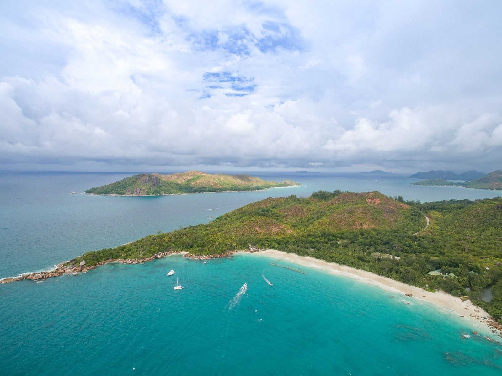
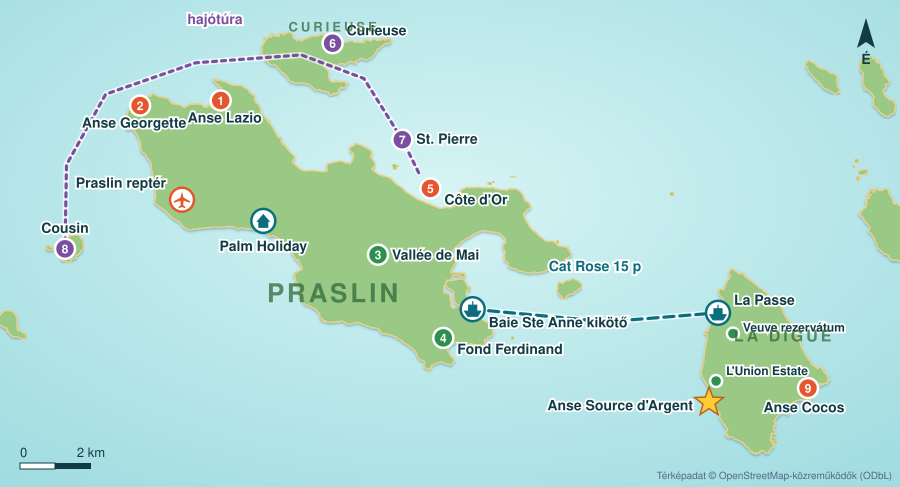

Fotó: dronepicr · CC BY 2.0
1 · Anse Lazio
fürdés ●●●●● · sznorkel ●●●○○
Világhírű öböl gránitsziklákkal, kristálytiszta vízzel. Van vízimentő. A két sziklás végén sznorkelezz, ott vannak a halak és néha teknős.

 Kezdőlap
Kezdőlap

Praslin a második legnagyobb sziget, kb. 12 × 4 km: lassú, zöld és nyugodt. Egy világörökségi pálmaerdő (Vallée de Mai) és a Seychelle-szigetek két leghíresebb strandja (Anse Lazio, Anse Georgette) van rajta. Autóval 20–25 perc alatt bárhová eljutsz. La Digue 15 percre van hajóval (seyferry.com). Autó nincs rajta, biciklivel lehet bejárni, és itt van az Anse Source d'Argent.
A Vallée de Mai „kistestvére”, coco de mer erdő kevesebb emberrel, kilátással La Digue-re és Curieuse-ra. Csak délelőtt, vezetővel. kb. 6 700 Ft300 SCR/fő.
Hosszú, sekély, nyugodt strand vízimentővel, éttermekkel. Esti sétára és vacsorára a legjobb (Pirogue).
Szabadon élő óriásteknősök, mangrove-ösvény (a 433 m-es pallósor a leghosszabb a szigetországban), az egykori orvosház (2024-ben felújítás alatt állt). Csak hajóval.
Az a kis gránitsziget a pálmákkal, amit minden képeslapon látni. Körülötte Praslin legjobb sznorkelhelye.
Madárrezervátum, ahol a teknősök tojást raknak (okt.–febr.). Csak H–P, 09:45–12:30, kb. 13 300 Ft600 SCR/fő.
Apró, üres öblök a délnyugati parton, 10 percre a szállástól. Nyugodt időben jó fürdésre.
A L'Union Estate területén át lehet bejutni (kb. 3 300 Ft150 SCR/fő, készpénz, egész napra szól). Hatalmas, csiszolt gránittömbök és sekély türkiz lagúna. Dagálykor fürödni, apálykor sétálni jó.
Egykori kopraültetvény: ültetvényes ház, kopraszárító, óriásteknősök karámban. Útközben nézd meg.
A sziget vad keleti oldala. Fürdeni csak az Anse Cocos sziklamedencéiben szabad, a többi helyen erős az áramlat.
5 percre a kikötőtől. Itt él a fekete paradicsom-légykapó, amely sehol máshol nincs a világon. H–P 08:00–16:00, kb. 3 300 Ft150 SCR/fő.
A fősziget, kb. 27 km hosszú. Az északi része városias (Victoria, Beau Vallon), a hegyek közepén a Morne Seychellois Nemzeti Park esőerdeje, délen pedig vad, üres strandok. A Kempinski a délnyugati parton, a Baie Lazare öbölben van. Innen a déli strandok 10–15 percre, Victoria kb. 40 percre van autóval.
Eldugott strand, csak gyalog vagy hajóval érhető el. Az út kb. 1 óra, 2,4 km, Danzil felől, végig kilátással. kb. 3 300 Ft150 SCR/fő (spga.gov.sc).
Hosszú, biztonságos strand vízimentővel, büfékkel. Szerdánként és a hónap utolsó szombatján esti piac (ránk egyik sem esik).
Tengeri park nyugaton, nyugodt, tiszta víz, jó sznorkel. kb. 4 400 Ft200 SCR/fő, 9–17 óra (spga.gov.sc).
Rövid, meredek esőerdei túra egy sziklaperemhez, ahonnan az egész nyugati part látszik. Reggel menj, délre gyakran beborul.
Könnyebb túra kilátással Victoriára és a szigetekre, kb. 2 200 Ft100 SCR/fő.
Kis öböl pár percnyi autóútra a Kempinskitől, naplementekor a legszebb. Egy egyszerű kávézó van rajta.